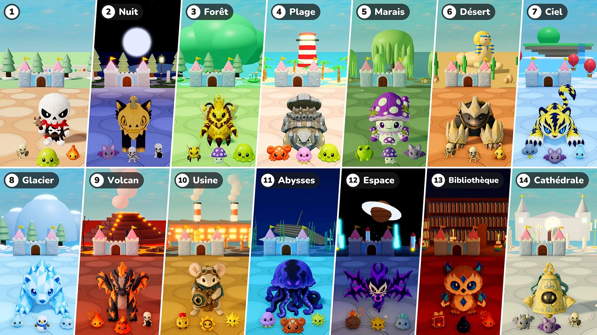

Saison 2 · Mise à jour 07 · 10 novembre

Défense du château
- Étapes : Toutes les 10 manches forment désormais une étape. L'Étape 1 est le village, comme avant ; à partir de l'Étape 2, chaque étape est un lieu différent, avec sa lumière et sa météo, son sol et son décor, ainsi que ses monstres, ses élites et ses boss. Après le dernier lieu, les lieux reprennent à partir de celui de l'Étape 2.
- Boss : Un boss de plus toutes les 10 manches → toujours un seul boss, accompagné d'autant d'élites qu'il y avait de boss en plus (1 aux manches 15 et 20, 2 aux manches 25 et 30…). À partir de l'Étape 2, les boss et les élites sont les peluches du lieu. Mielreine peut désormais être un boss, elle aussi.
- Élites : Les élites sont désormais 1,15 fois plus grandes. À partir de l'Étape 2, leurs PV augmentent de 50 % par étape, et les étoiles qu'elles laissent tomber passent de 10 à 10 × le numéro de l'étape (20 à l'Étape 2, 30 à l'Étape 3…).
- Nouveaux monstres : 16 nouveaux monstres rejoignent les lieux (Chauve-souris · Crabe · Méduse · Grenouille venimeuse · Scorpion · Nuage d'orage · Esprit de givre · Bonhomme de neige · Slime de glace · Slime de lave · Soldat mécanique · Engrenage · Météore · Grimoire · Goutte d'encre · Gargouille). Les onglets Monstres et Boss du Codex sont désormais classés par étape.
- Amélioration de stats : Aucune Amélioration de stats n'est proposée lors d'une manche où l'on choisit des peluches.
- Invocations : Correction d'un problème : les Améliorations de stats ne s'appliquaient pas aux invocations. Elles s'appliquent désormais aux abeilles de Mielreine, à l'arbre de Pépiou et au Jumeau du miroir comme aux peluches, et une Amélioration de stats choisie pendant qu'une invocation est sur le terrain s'applique aussitôt.
- Vitesse ×2 : Un bouton « ×2 » est ajouté à côté du bouton pause. Appuie dessus et le combat va deux fois plus vite ; appuie à nouveau pour revenir à la vitesse normale. Le temps pour choisir les peluches et les améliorations, ainsi que la marche de ton avatar, ne changent pas. Dans « Jouer ensemble », toute la partie change, peu importe qui appuie.
- PV du château : La barre de PV du château est plus grande et ses chiffres s'affichent juste à côté de la barre.
Étapes et lieux
Les lieux à partir de l'Étape 2, avec leurs monstres et leurs boss. Les peluches qui arrivent en Boss ou en Grand boss d'un lieu y arrivent aussi comme élites.
- Étape 2 · Nuit : Chauve-souris · Archer squelette · Squelette bombardier — Boss : Blissfox · Duvetin — Grand boss : Dreadfox · Pumpcat
- Étape 3 · Forêt : Abeille ouvrière · Champignon vénéneux · Slime — Boss : Hérispin · Mielmelade — Grand boss : Mielreine — Élites : Pépiou
- Étape 4 · Plage : Crabe · Méduse · Slime — Boss : Cocoblin · Tortugalet — Grand boss : Rocoblin · Tortufer
- Étape 5 · Marais : Grenouille venimeuse · Champignon vénéneux · Chauve-souris — Boss : Mudpug · Escarpoison — Grand boss : Boghorn · Sporette
- Étape 6 · Désert : Guerrier squelette · Archer squelette · Scorpion — Boss : Bonys · Griffemou — Grand boss : Bonix · Griffefer
- Étape 7 · Ciel : Nuage d'orage · Chauve-souris · Esprit de givre — Boss : Voltis · Auromartre — Grand boss : Voltigre · Griffion
- Étape 8 · Glacier : Esprit de givre · Bonhomme de neige · Slime de glace — Boss : Glassy · Shardfin — Grand boss : Polarrock · Prismlance
- Étape 9 · Volcan : Braise · Slime de lave · Squelette bombardier — Boss : Flamo · Ashgon — Grand boss : Flammonyx · Embergon
- Étape 10 · Usine : Soldat mécanique · Engrenage · Étincelle — Boss : Mouseball · Tic-Rouage — Grand boss : Optimouse · Obscor
- Étape 11 · Abysses : Méduse · Crabe · Étincelle — Boss : Hydris · Frico — Grand boss : Serenis · Abyzel
- Étape 12 · Espace : Météore · Étincelle · Slime de glace — Boss : Voidren · Echowing — Grand boss : Voidling · Noisewing
- Étape 13 · Bibliothèque : Grimoire · Goutte d'encre · Braise — Boss : Melty · Briarowl — Grand boss : Candric · Crystowl
- Étape 14 · Cathédrale : Gargouille · Chauve-souris · Guerrier squelette — Boss : Lilupi · Carillon — Grand boss : Radiant · Carillosse